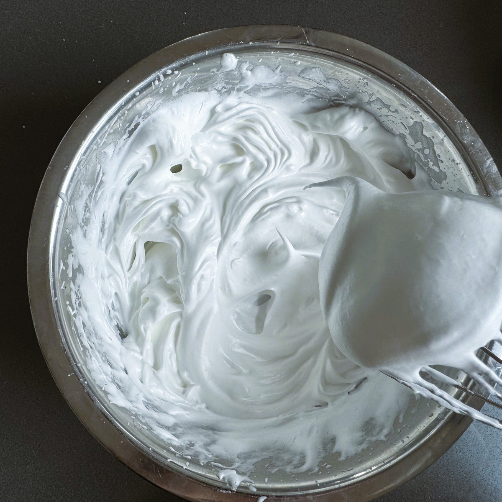
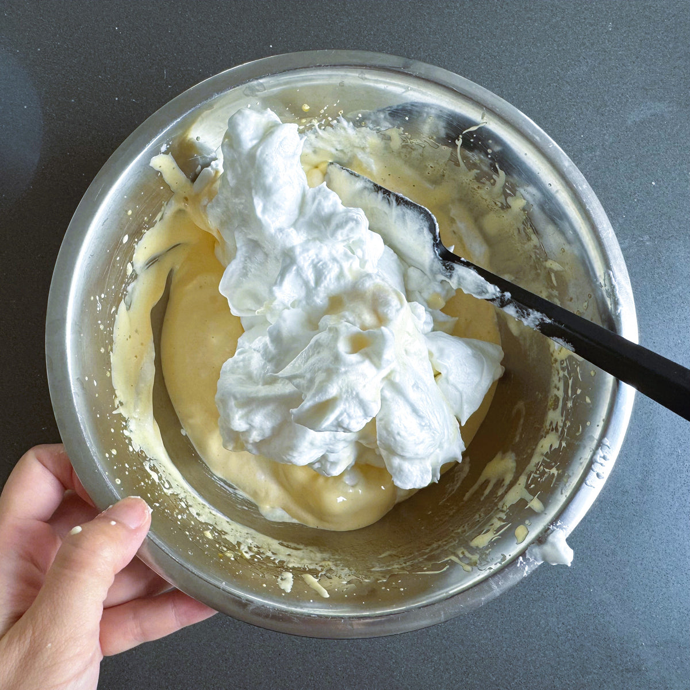
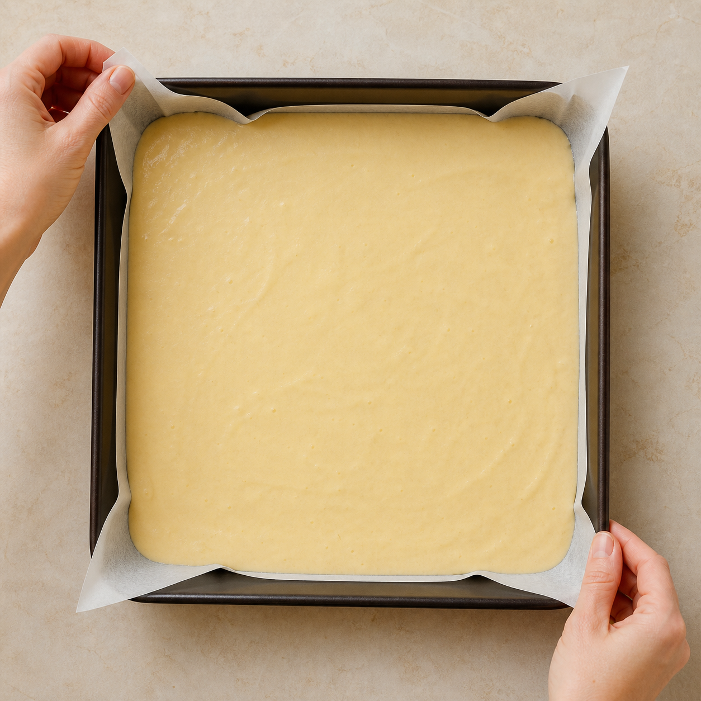
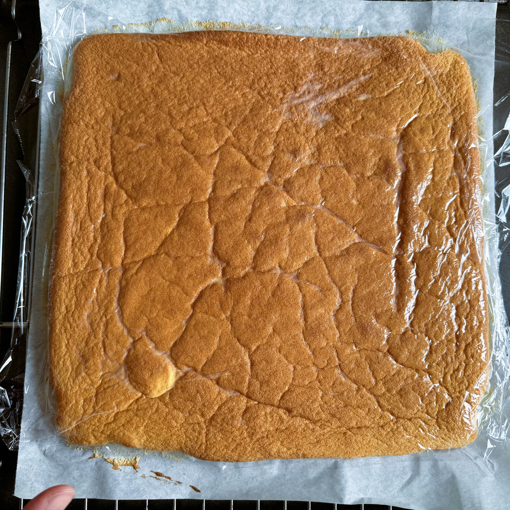
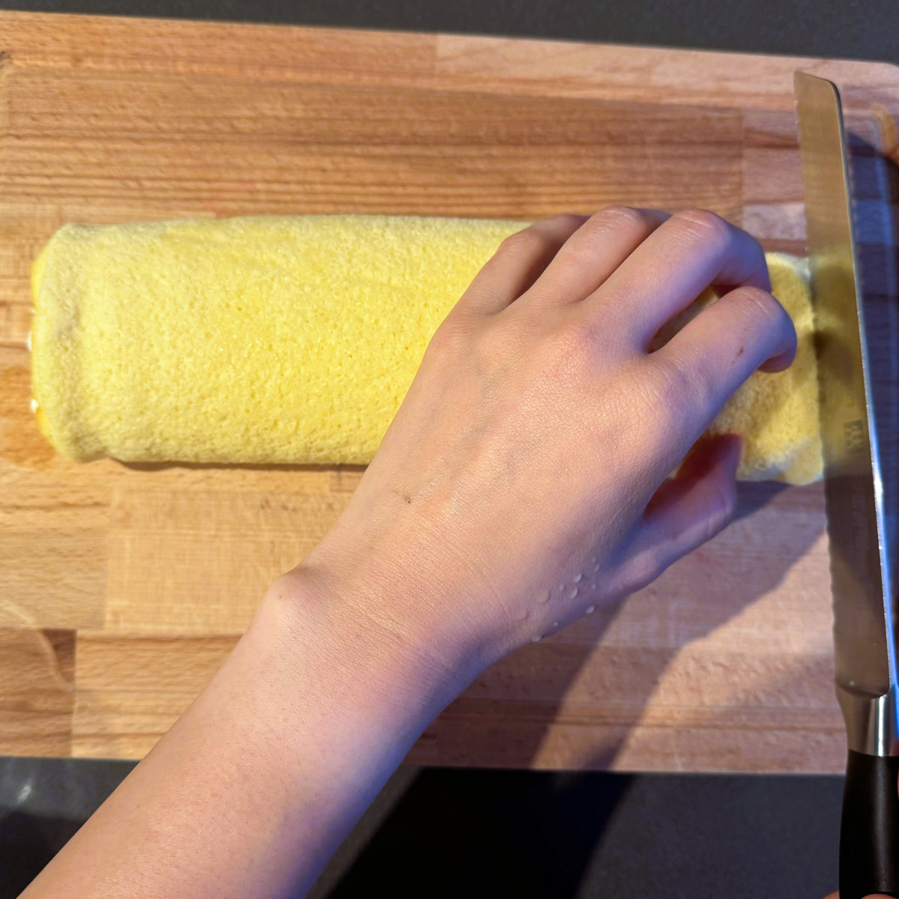

烘焙麦芬、瑞士卷、裸蛋糕、面包
厨房里能直接照着做
Brew & Bake Lab
咖啡、茶饮与烘焙的参数化实操手册。每个作品都拆成材料、工具、参数、步骤、状态判断和失败排查。
5首批作品
7步统一详情模板
状态图判断比描述更清楚
快速分类
首页按“今天想做什么”进入；技巧库保留在主导航和作品详情里。
饮品咖啡、抹茶/茶饮、可可/奶饮
烤箱菜鸡翅、牛排、蔬菜、复热炸物
饮品二级手冲、意式、奶咖、冷萃、抹茶拿铁
首批作品
卡片先回答今天能不能做：耗时、工具、关键风险都直接露出。
按场景选择
比分类更贴近真实厨房决策。
作品库
筛选时优先看“我有什么工具”和“今天有多少时间”。
排序
后续点击卡片进入作品详情页。详情页会固定包含：顶部概览、参数卡、步骤流程、状态图库、失败排查和版本记录。
中等难度
约 2 小时
蛋白打发
原味奶油瑞士卷
柔软、细密、能顺利卷起的基础蛋糕卷。先守住蛋白霜和翻拌，再用烤色、回弹与温度判断出炉时机；卷制成败取决于出炉后的前 10 分钟。
这份配方还能这样做
成品实拍待替换
需要展示卷芯、奶油厚度与表皮状态
需要展示卷芯、奶油厚度与表皮状态
参数卡
这里只放不会随步骤变化的固定参数。
| 成品 | 1 条，约 8 切。 |
|---|---|
| 蛋糕糊 | 4 蛋、油 50g、牛奶或水 50g、低粉 60g、细砂糖 60g。 |
| 夹馅 | 淡奶油 200g、糖 14g。 |
| 烤箱 & 烤盘 | 28 × 28cm 方盘。 |
| 烘烤 | 上下管 170°C，下层约 25 分钟；最后 3–5 分钟可开热风。 |
| 定型 | 晾到手温预卷；抹馅后冷藏至少 45 分钟。 |
步骤流程
按实际动手顺序排列；做到哪一步，只看当前卡片。
PHASE 01蛋糊制作
1
分离蛋白和蛋黄
操作分离 4 个鸡蛋：蛋黄放入小碗，蛋白放入蛋白盆。分好后立刻把蛋白盆放进冰箱。
判断蛋白里没有蛋黄，蛋壳碎片已经取出。
注意蛋黄糊用的大盆先保持空盆，下一步直接放到秤上加材料。
2
大盆上秤，制作粉水糊
操作大盆直接上秤，倒入油和牛奶，搅匀后筛入低粉。
判断粉水糊均匀，看不到干粉和浮油。
注意每加入一种材料就归零，避免另外换盆称量。
3
加入蛋黄
操作加入蛋黄，用 Z 字拌匀。完成后把蛋黄糊放进冰箱。
判断蛋黄糊顺滑、有光泽，提起打蛋器能连续落下。
注意不要画圈久搅；蛋黄糊冷藏到混合前再取出。
4
铺油纸并预热烤箱
操作烤盘铺好油纸，烤箱上下管预热至 170°C。
判断油纸贴住四边和四角，烤箱已经开始升温。
注意在打发蛋白前完成，面糊混合好后可以直接入盘进炉。
5
打发蛋白

操作开始打发时加第一次糖，高速打到鱼眼泡；加第二次糖，出现纹路后改低速，再加剩余糖。
判断蛋白霜细腻有光泽，提起打蛋头，尖角微弯。
注意可加少量柠檬汁和 1–2 滴香草精。出现短硬尖角就停，继续打会让成品粗糙、卷时易裂。
6
混合蛋黄糊和蛋白霜

操作取 1/3 蛋白霜拌入蛋黄糊，再把混合物全部倒回蛋白盆翻拌。
判断面糊颜色均匀，呈宽带状落下，看不到白色蛋白块。
注意刮刀贴盆底翻起，不要画圈。面糊明显变稀就是消泡，烤后容易回缩。
PHASE 02烤制与卷形
7
入盘并排气

操作倒入面糊。捏住油纸对角晃动烤盘，让面糊流到四角，再拍烤盘底部排气。
判断面糊厚度均匀，四角填满，表面没有大气泡。
注意不要反复刮平。四角太薄会先干，中心太厚容易湿黏。
8
烘烤、脱模并散热

操作放入预热好的烤箱下层，烤约 25 分钟。出炉后分离四周，平移到晾网上，掀开四边油纸。
判断表面上色均匀，轻按回弹，底部没有湿黏。
注意颜色太浅、按压不回弹就继续烤。出炉后不要留在热烤盘里。
9
晾到手温，先卷出形状

操作蛋糕晾到手摸还有一点温度，从近端卷起，借卷筒带出圆润卷芯。
判断蛋糕能弯曲，表皮没有开裂，卷芯没有被压扁。
注意太热容易粘皮，完全冷透再卷又容易开裂。
PHASE 03夹馅定型
10
抹奶油、终卷并冷藏
操作蛋糕完全冷却后展开，抹上奶油，再沿原来的卷向卷紧。
判断奶油不流动，卷好后接口能朝下放稳。
注意包好后冷藏至少 45 分钟再切。
过程示意图来源：Japanese Taste
关键状态图
只保留真正影响成败、需要用眼睛判断的状态。
STATE 01湿性偏中性蛋白霜纹路清楚、尖角微弯；比戚风蛋糕的硬性发泡更柔软。
STATE 02正确翻拌面糊宽带状落下并缓慢融回；太稀是消泡，成块是未拌匀。
STATE 03手温预卷状态蛋糕片能自然弯曲，卷芯圆润，表皮没有开裂或被压扁。
成品有问题？做完后再看
| 开裂 | 蛋白过硬、烤得太干，或凉透后才预卷。 |
|---|---|
| 湿黏或回缩 | 中心没熟，或翻拌时消泡。 |
| 掉皮 | 上色不足，或蛋糕没凉透就抹馅。 |
| 奶油挤出 | 奶油太软、远端抹得太厚，或卷得过紧。 |
版本记录
保留每次调整的变量，避免同时改太多参数。
当前 · 原味基础
| 原味基础 | 4 蛋 / 28cm 方盘 / 170°C；油、牛奶各 50g，低粉、细砂糖各 60g。 |
|---|---|
| 下一轮只测 | 根据自家烤箱实测温差，在 160–170°C 内单独调整温度，不同时改变时间与配方。 |